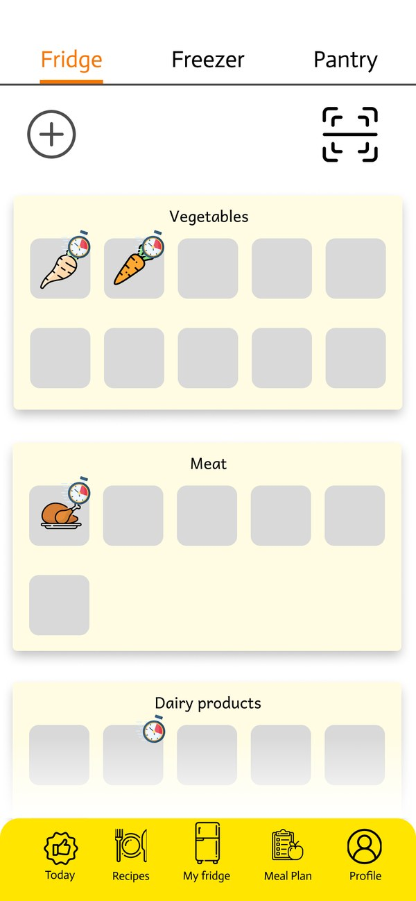
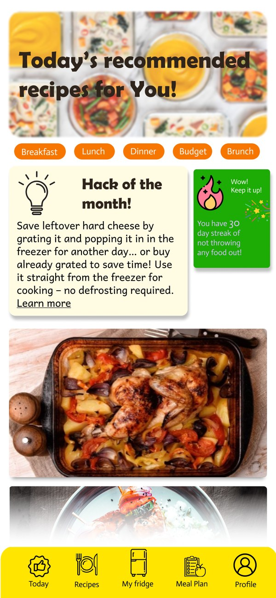
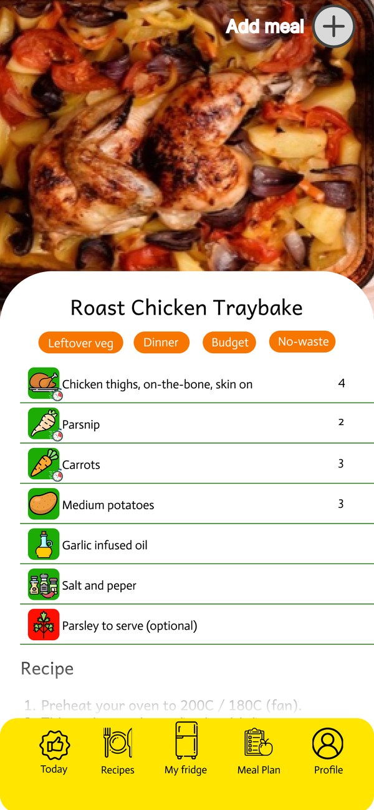
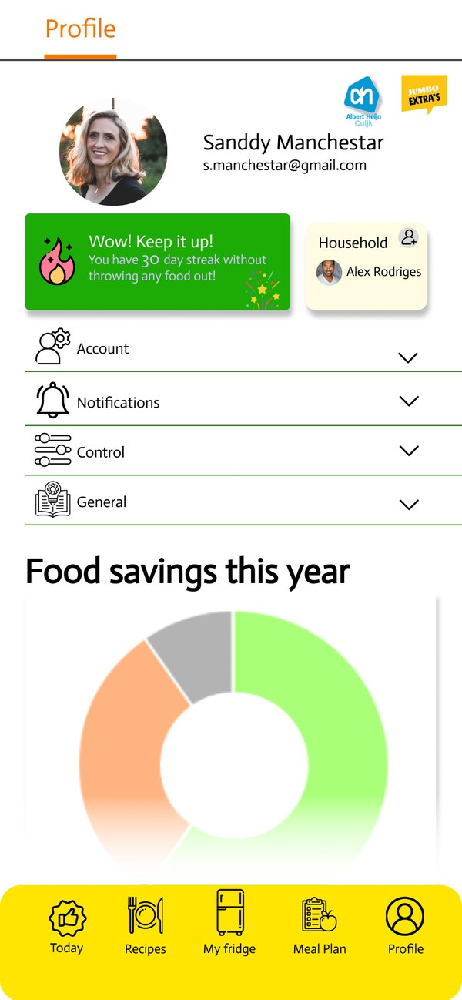

UX & data
A fridge that tells you what to cook
A lot of food is thrown away simply because people forget what they have. This app keeps track of your fridge, freezer and pantry, and turns what’s about to expire into tonight’s dinner.
How it works
- A visual fridge. Products are grouped by shelf: vegetables, meat, dairy. A small timer appears on anything that will expire soon. You add products with the plus button or by scanning them.
- Recipes from what you have. The Today screen suggests recipes, and each recipe marks which ingredients are already in your fridge and which are about to expire. Tags like No-waste and Leftover veg make them easy to find.
- Small habits, rewarded. A streak counts the days without throwing food out, and a hack of the month gives one practical tip.
- Progress over the year. The profile shows how much food was used, thrown away or expired, and the household can be shared with the people you live with.
Photos, people and store logos are placeholders for this concept.



